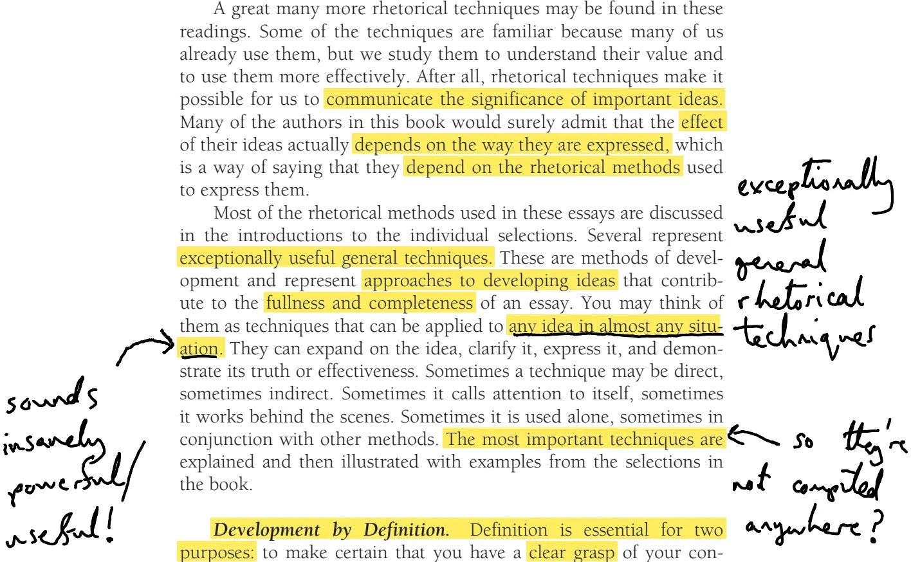
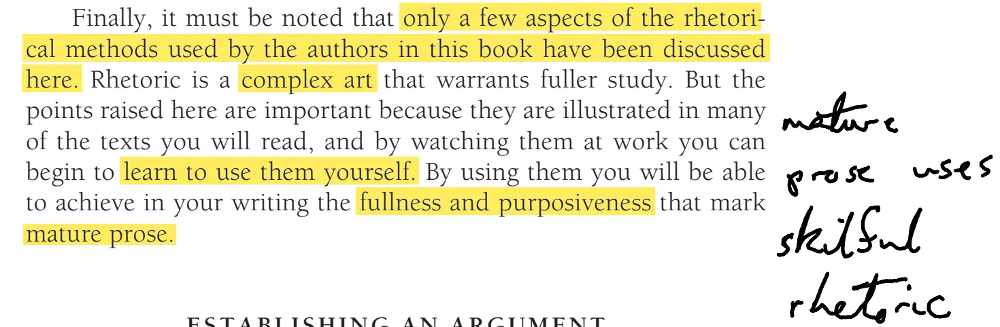

1. Formulating a thesis statement
In the context of A World of Ideas, formulating a thesis statement is described as one of the most critical steps in the writing process. It is defined as an assertion that must be “made good” by the specifics of your writing, such as facts, expert opinions, or textual analysis.
How to Formulate a Thesis
The sources provide several guidelines for creating a strong thesis:
- Ask and Answer a Question: A reliable way to generate a thesis is to turn your reading annotations into a question and then use your essay to provide the answer.
- Identify Your Subject and Aim: A good thesis identifies what you are arguing or explaining. It should act as a “signpost,” guiding the reader and controlling the scope and focus of the essay.
- Keep it Dynamic: A thesis is not “carved in stone.” It is a dynamic element that should be recast and refined as you write and your thinking evolves.
- Choose an Appropriate Form: You can state your thesis plainly (best for persuasive or informative writing) or imply it (common in expressive writing). It can be a single sentence or a group of sentences.
- Determine Your Category: The sources highlight different types of theses used by great thinkers, including those that state a position (Rousseau), establish a cause (Thoreau), state an opinion (Carnegie), analyze a circumstance (Woolf), define a condition (Greer), or establish a conclusion (Jung)
2. Methods of development


1. Definition
- Actually defining shit. Sometimes you can do this in a sentence, sometimes a paragraph, sometimes it takes a lot more nuance, and further things like examples and comparisons
NotebookLM notes
The rhetorical method of definition is presented in the sources as an essential tool for ensuring both the writer and the reader have a clear grasp of complex concepts. Rather than relying on simple dictionary entries, which the text describes as “facile,” effective definition involves detailed explanation followed by examples.
Key aspects of this method include:
Purpose and Scope
- Clarification: It is used to communicate a clear understanding of sophisticated ideas that cannot be easily reduced to a few words.
- Flexibility: Definition can be used to develop a single paragraph, a specific section, or an entire essay.
- Analytical Depth: A comprehensive definition considers a concept’s function, purpose, circumstance, origin, and implications for different groups.
Strategies for Implementation
The sources suggest that the most effective definitions are built through full description and complex discussion. Writers are encouraged to:
- Use explanations and examples to make the definition complete.
- Spend significant time defining key ideas when arguing a point, as this establishes the foundation for the rest of the argument.
Notable Examples in the Sources
The text highlights several authors who masterfully use definition:
- John Kenneth Galbraith: In “The Position of Poverty,” he distinguishes between “case poverty” (related to individual characteristics) and “insular poverty” (a more complex condition involving a group alienated from the majority).
- Martin Luther King Jr.: In “Letter from Birmingham Jail,” he defines just and unjust laws. He clarifies that an unjust law is a code a majority compels a minority to follow but does not make binding on itself, effectively defining it as “difference made legal”. He further extends this definition by explaining the circumstances, such as when a law is inflicted on a minority denied the right to vote.
- Germaine Greer: In “Masculinity,” she uses definition to establish her thesis, distinguishing between “maleness” as a natural biological condition and “masculinity” as a cultural construct or gender.
- Rashida G. (Student Writer): An example provided shows a student using definition to distinguish between “natural liberty” (freedom in nature) and “civil liberty” (freedom within a societal group) based on the writings of Jean-Jacques Rousseau.
2. Comparison
- Comparing things. Obvious
NotebookLM
Comparison is described in the sources as a “natural operation of the mind” and a fundamental component of both critical reading and effective writing. It allows readers to move beyond passive consumption of information and participate in a “universal dialogue” by identifying contradictions, shared qualities, or unique differences between various thinkers.
The sources detail comparison in several specific contexts:
As a Critical Reading Tool
Critical reading involves comparing the statements of one writer with those of another. The book’s structure, organized into eight “Great Ideas,” is specifically designed to facilitate these cross-disciplinary comparisons. For example, the text encourages readers to compare:
- Lao-tzu and Machiavelli on the nature of leadership and government.
- Aristotle and Andrew Carnegie on the communal versus individual nature of wealth and morality.
- Sigmund Freud and Carl Jung regarding their differing views on the unconscious mind.
As a Rhetorical Method of Development
When used as a strategy for writing, “Development by Comparison” typically includes four essential elements:
- Definitions: Clearly defining the two or more elements being compared using examples, explanations, or descriptions.
- Shared Qualities: A discussion of what the elements have in common.
- Unique Qualities: A discussion of the traits that distinguish them from one another.
- A Clear Purpose: A specific reason for making the comparison in the first place.
Notable Examples of Comparison
The sources provide several models of how this method is applied by influential writers:
- Virginia Woolf: In ”Shakespeare's Sister,” she uses an imaginative comparison between William Shakespeare and a fictional sister of equal genius. By showing how the brother could seek his fortune in London while the sister was confined to domestic chores and denied an education, Woolf highlights the social attitudes and gender-based limitations of the sixteenth century.
- Niccolò Machiavelli: He employs comparison to argue his political points, such as contrasting the outcomes for an armed prince versus an unarmed one to demonstrate that being disarmed leads to being “despised”.
- Student Writing: One student example compares Freud’s Oedipus complex to Jung’s archetypes, arguing that despite their disagreements, both thinkers view these patterns of human behavior as universal and “built in” to people.
By engaging in these comparisons, students are able to “conquer the invisible” in complex texts and develop original arguments for their own essays
3. Example
- Giving examples innit
NotebookLM
Development by example is a rhetorical method used to make abstract ideas concrete and understandable. According to the sources, examples are essential for either convincing a reader that a proposition is true or for deepening their understanding of a complex statement.
The sources outline specific strategies and ways that examples are employed by the thinkers in the text:
Strategies for Using Examples
Writers are encouraged to choose their examples carefully, as the “burden of proof” often depends on them. Effective use of this method involves:
- Choosing a few strong examples rather than many weak ones.
- Being concrete and specific by naming names, citing specific events, and providing details.
- Developing examples fully and explicitly pointing out how they are relevant to the writer’s position.
Different Approaches to the Method
The sources identify two primary ways that influential authors use examples to build an argument:
- The Weight of Numbers: Authors like Charles Darwin present a large volume of examples that essentially force the reader to reach a specific conclusion through the sheer accumulation of evidence.
- Testing a Proposition: Authors like Niccolò Machiavelli make a controversial or questionable statement and then provide an example to lead the audience to a “reasonable conclusion”. For instance, Machiavelli uses the example of Francesco Sforza to show that being armed leads to power, while being disarmed leads to being “despised”.
Integration with Other Methods
Examples are frequently used to strengthen other rhetorical techniques:
- With Definition: The sources state that a “more useful strategy” than a dictionary definition is to provide an explanation followed by a concrete example. Martin Luther King Jr., for example, defines “just” and “unjust” laws and then provides a “concrete example” regarding segregation and voting rights in Alabama to clarify his point.
- With Comparison: Examples are often used to define the elements being compared, such as Virginia Woolf’s imaginative example of “Shakespeare’s sister” to highlight the gender limitations of the sixteenth century.
Notable Uses in the Text
- Thomas Jefferson and Elizabeth Cady Stanton: Both use a list of “facts” or examples of "repeated injuries and usurpations" to prove the existence of tyranny in the Declaration of Independence and the Declaration of Sentiments, respectively.
- Carl Jung: He focuses on a “single example”—a woman with a “father complex”—and develops it extensively for over two pages to illustrate the nature of the collective unconscious.
- Margaret Mead: She uses examples from various societies to demonstrate that masculine and feminine temperaments are not biologically fixed but vary by culture
4. Cause and Effect
- Examining cause and effect. Asserting that thing x is caused by thing y
NotebookLM
Development by Analysis of Cause and Effect is a rhetorical method used to explore why something happens or to speculate on the potential outcomes of a specific action. Because the relationship between a cause and its result can be subtle and complex, the sources emphasize that this method requires careful, thoughtful examination and a strong line of reasoning.
Key aspects of this method include:
Core Principles for Effective Use
The sources provide three specific suggestions for writers using this method:
- Clear Identification: You must clearly establish both the cause and the effect you intend to discuss in your own mind first.
- Logical Reasoning: You must develop a line of reasoning that demonstrates a logical relationship between the two.
- Verification: You must ensure that the relationship is real and not merely apparent, as it is easy to be mistaken about why things happen.
Applications in Critical Writing
Writers use cause and effect differently depending on whether they are looking at the past or the future:
- Hypothesizing (Looking Back): When an event has already occurred, writers use reasoning and imagination to develop a hypothesis about its cause. For example, Charles Darwin observed similarities in animal skeletons and reasoned that evolution was the underlying cause.
- Speculating (Looking Forward): If an effect hasn’t been observed yet, writers speculate on possible outcomes based on planned actions.
Notable Examples from the Thinkers
The sources highlight how several influential authors rely on this method to develop their arguments:
- Andrew Carnegie: He argues that the modern industrial mode of manufacture (cause) has resulted in the "inevitable" effect of providing high-quality commodities at lower prices, benefiting all social classes from the laborer to the landlord.
- Thomas Jefferson: In the Declaration of Independence, he establishes a direct link between the abuses of the British King (cause) and the necessary effect of America severing its colonial ties.
- Karl Marx: He identifies the capitalist economic system as the specific cause of the oppression of workers.
- John Stuart Mill: He argues that traditional Western values (cause) lead to the subordination of women (effect).
- Henry David Thoreau: He establishes the specific injustices (causes) that make civil disobedience a necessary effect.
Ultimately, understanding cause and effect helps a reader move beyond just identifying what happened to understanding the deeper reasoning and circumstances behind an author’s claims
5. Analysis of Circumstances
- This one felt the least clear to me. I guess like, “why is poverty a thing” ?
NotebookLM
Analysis of circumstances is a rhetorical method of development used to explore a situation by examining what is possible or impossible within it. Traditionally, this method has two primary parts: determining if a specific course of action is achievable in a given scenario and analyzing past events to predict what might be possible in the future.
The sources outline specific strategies and provide examples of how influential thinkers employ this method:
Strategies for Analyzing Circumstances
To use this method effectively, a writer should follow several key steps:
- Clarify Possibility: Explicitly define what can or cannot be done in the situation being discussed.
- Review the Past: Look at historical survey of a situation to determine if past actions can be replicated or if they dictate future possibilities.
- Establish the Present: Provide a detailed, fact-based account of current conditions.
- Suggest Action: Use the analysis of both past and present circumstances to recommend a specific way forward.
Applications by Great Thinkers
Many authors in A World of Ideas rely on this method to build their arguments:
- Martin Luther King Jr.: In “Letter from Birmingham Jail,” he reviews the "hard brutal facts" of racial injustice and explains how these circumstances made nonviolent action a necessity. He further analyzes the past by connecting his actions to those of the Apostle Paul.
- Niccolò Machiavelli: His entire work, The Prince, is described as a "recitation of the circumstances" required for political success. He argues that a leader must be ready to change their behavior according to the “winds of Fortune” and that circumstances ultimately determine whether it is possible to remain virtuous or necessary to “enter into evil”.
- Karl Marx: In The Communist Manifesto, he analyzes historical economic circumstances, such as how the growing needs of new markets caused the feudal system of industry to be replaced by the manufacturing system.
- Robert B. Reich: He examines the circumstances of the contemporary global economy, arguing that automation and easy replacement have lowered wages for certain workers, while “symbolic analysts” thrive because they cannot be easily replaced.
- Virginia Woolf: She uses this method to develop a thesis about the “formidable” difficulties women of genius faced in the sixteenth century, analyzing the social and historical conditions that denied them the independence and education available to men like Shakespeare.
Connection to Thesis Statements
The sources also note that a thesis statement can be specifically designed to analyze circumstance. Such a thesis makes an assertion based on a careful analysis of history or current conditions, which the rest of the essay then supports with evidence. For instance, a student writer, Linda R., uses this method to analyze why “outstanding men” are rarely summoned to public office today, citing the modern circumstance of “attack ads” and “dirty politics” as deterrents